Balkan in kaart
Vijf eeuwen strijd om identiteit
Tentoonstelling van 4 september tot 16 oktober 2003 in de Universiteitsbibliotheek
Samenstelling: Harrie Teunissen en John Steegh
Tentoonstelling
kaarten 1 - 6, 7
- 9, 10 - 19, 20
- 29, 30 - 39, 40 - 47
Tenzij anders vermeld zijn de hier beschreven kaarten en gerelateerde stukken afkomstig uit de ‘Collectie Steegh & Teunissen’, te Leiden. Aan het eind van iedere uitgebreide objectbeschrijving is de naam van de auteur vermeld.
| 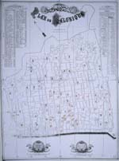 | 30. Wernieski, Antoine (l'ingenieur
en chef de la Municipalité de Salonique): Plan de Salonique. Salonika 1889. (Verkleinde copie van stadsplattegrond van Salonika uit 1889 met legenda in het Frans en het Ottomaans Turks. Hierop zijn de toenmalige synagoges, kerken en moskeeën apart ingetekend) .Verkleind tot 52,5 x 38,5 cm. (W.1g.15) Het Macedonische Salonika (Bulgaars: Soloen, Grieks: Thessaloniki, Turks: Sélanik) wordt tegen 1900 door Bulgarije, Servië en Griekenland op de Ottomanen geclaimd. Deze dynamische havenstad wordt het Jeruzalem van de Balkan genoemd. Sinds |
|
|
joden en maranen uit Spanje, Zuid-Italië en Portugal hier hun
toevlucht zochten is de meerderheid van de bevolking namelijk joods.
De namen van diverse synagogen op de stadsplattegrond markeren deze
geschiedenis. Uit een volkstelling van 1883 blijkt dat van de 85
duizend inwoners er 48 duizend joden zijn, verder zijn er 20 duizend
turkse moslims en 16 duizend Grieks-orthodoxe inwoners. In het
achterland van de stad wonen ook veel slavisch sprekende onderdanen
van de sultan. Rond 1900 kent de stad 32 synagogen, 32 moskeëen
en 18 kerken. De synagogen heten: 1. Nevee tsedek (Woning der
gerechtigheid, uit Calabrië), 2. Kiana (uit Calabrië), 3. Ishmaël
(uit Calabrië), 4. Mayor sjenie (Tweede Majorca), 5. Sicilia
chadasj (Nieuw Sicilië), 6.
Lisbon jasjan (Oud Lissabon), 7. Mayor risjon (Eerste Majorca), 8.
Mograbish (uit de Maghreb), 9. Yahia (uit Portugal), 10.
Talmoud Tora (de centrale synagoge),11. Geroesj Sefarad (Verdrijving uit Spanje),
12. Estroug (uit Apulië),
13. Bet Aharon (Huis van Aäron, uit Sicilië), 14. Nevee sjalom
(Woning van vrede, uit Calabrië), 15.Lisbon chadasj (Nieuw Lissabon), 16.
Ets-ha-chajjiem (Boom des levens, uit Byzantium), 17. Castillia, 18.
Asjkenaz (uit centraal Europa), 19. Catalan jasjan (Oud Catalonië),
20. Sicilia jasjan (Oud Sicilië), 21. Aragon, 22. Italia jasjan
(Oud Italië), 23. Portugal, 24. Sjalom (gemengd), 25. Italia
chadasj (Nieuw Italië), 26. Italia sjalom, 27. Pulia (Apulië), 28.
Har gavoa (Hoge berg, uit Apulië), 29 Provencia (Provence), 30.Otranto, 31. Catalan chadasj (Nieuw Catalonië), 32.
|
||
| 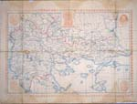 | 31. Chartis ton empolemon
kraton (Kaart van de staten in oorlog). Z.p. 1912. Waarschijnlijk
uitgegeven door drukkerij Aristoboulou in Salonika. Handgekleurd,
45,5 x 60 cm. (W.2n.1)
Deze eenvoudige, maar zeldzame grieks-Ottomaanse kaart uit eind
1912 toont Europees Turkije met de |
|
| van de Balkan Liga
tijdens de Eerste Balkanoorlog (1912-'13). Centraal staat sultan
Mehmet V omgeven door tsaar Ferdinand van Bulgarije, en de koningen
George I van Griekenland, Nicolaas I van Montenegro en Petar I van
Servië. Deze kaart, met plaatsnamen in het grieks, geeft nog net de
laatste maand van Europees Turkije weer. Meteen in het begin
van de oorlog verovert het Griekse leger het felbegeerde Salonika.
Ook Epirus, Egeïsch-Macedonië en een aantal eilanden in de Egeïsche
zee vallen toe aan Griekenland. (meer)
|
||
| 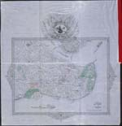 | 32. Ottomaanse
plattegrond van Istanboel ca. 1880, Schaal 1 : 10.000, 56 x 54
cm. (UB Leiden Or. 12.367) Deze fraaie Ottomaanse plattegrond toont Istanboel met Galata omstreeks 1880. De kaart wordt omgeven door een bewerkte rand die wordt gekroond door een tugra (gecaligrafeerde signatuur) van Sultan Abdülhamid II (1876-1909). Een zwarte lijn wijst op de spoorlijn langs de kust die eindigt aan de voet van het Topkapi-paleis. Twee onderbroken zwarte lijnen |
|
|
duiden op tramlijnen. Een rode stippellijn met blokjes duidt op het
geprojecteerd traject van een ondergrondse met haltes, maar die is
nooit gebouwd. De hoofdstad is door haar strategische ligging, haar
rijke geschiedenis en haar politieke en culturele rol een wereld apart
in een Ottomaans Rijk waar drievierde van de bevolking nog uit boeren
bestaat. Een Ottomaanse statistiek uit 1886 geeft de volgende
verdeling van de stad: 44 % moslims, 17,5 % grieken, 17,1 % armeniërs,
5,1 % joden. De snelle uitbreiding in de negentiende eeuw, tegen 1900
reeds één miljoen inwoners, voltrekt zich niet in Stamboel, ook niet
buiten haar Byzantijnse muren, maar in de woonwijken voorbij Galata en
op de aziatische oever van de Bosporus. (meer)
|
||
| 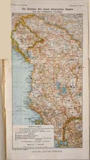 | 33. Prof. Paul Langhans.
Die Grenzen des neunen albanischen Staates nach den verschiedenen
Vorschlägen. Uit: Petermanns Mittheilungen 59, 1913. Schaal
1: 1.500.000. 43 x 46 cm. (UB Leiden V 138:59) Tijdens de Eerste Balkanoorlog wordt in november 1912 in Vlora de onafhankelijkheid van Albanië uitgeroepen. De voorlopige regering maakt aanspraak op etnische grenzen (de ononderbroken rode lijn). De Triple Entente van Rusland, Groot-Brittannië en Frankrijk stelt daarentegen een rompstaat voor die Servië en Griekenland een groot deel van hun veroveringen laat behouden (de rode met stippen onderbroken lijn). Op de Conferentie van Londen in 1913 wordt de onafhankelijkheid van Albanië erkend, maar zelfs Italië en Oostenrijk stellen niet voor Kosovo |
|
| op te nemen in Albanië, dat ongeveer de grenzen
krijgt van het
Oostenrijks-Hongaarse voorstel (de rode streepjes-lijn). Als na 500
jaar de Ottomaanse troepen deze gebieden verlaten woont de helft van
de albanezen buiten de grenzen van de nieuwe precaire staat. (meer)
|
||
| 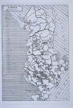 | 34. Nathalie Clayer:
Albanie. Bektachis. Uit: Nathalie Clayer, L'Albanie, pays des derviches. Les ordres mystiques musulmans en Albanie à l'époque post-ottomane (1912-1967). Berlijn 1990. 24 x 36 cm. (UB Leiden 8294 C 5). Dit simpele kaartje van Albanië met 99 Bektasji-tekkes wijst op een invloedrijke soefi-orde met een merkwaardige leer, die vaak dwars op de islamitische wet staat. De nummers verwijzen naar een repertorium verderop in het boek waarin alle bekende centra van deze orde in Albanië uit de periode 1912-'67 apart aan bod komen. Rond 1900, als haar mystiek sterk verweven raakt met de politiek, |
|
| spelen de Bektasji's een
grote rol in de Albanese strijd voor onafhankelijkheid. Met hun 15 %
vormen ze in de jaren twintig en dertig de derde religieuze
gemeenschap van Albanië, na de soennieten (55 %) en de orthodoxen
(20 %), maar nog voor de katholieken (10 %). In het communistische
Albanië wordt ook zij vanaf 1967 verdrongen door de staatscultus
van het atheïsme. (meer)
|
||
| 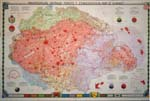 | 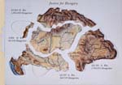 | 35. Dr. K. Kogutowicz, (uitg.),
Magyarország Néprajzi térképe. Ethnographical Map of Hungary. Budapest 1927. Schaal 1 : 1.000.000.63 x 95 cm. (W.2g.7) |
36. I. de Kunéry (Ed.), Justice for Hungary, Den Haag z.j. (ca. 1990), prentbriefkaart, 15 x 10,5 cm. (bruikleen H. & L. Van Waning) Na de Eerste Wereldoorlog houdt de veelvolkerenstaat Oostenrijk-Hongarije op te bestaan en heeft Hongarije in 1920 geen andere keus dan het verdrag van Trianon te ondertekenen. Gebieden massaal bewoond door niet-hongaren kunnen in deze tijd van zelfbeschikking der volkeren niet bij Hongarije blijven: Kroatië natuurlijk, Slowakije in strikte zin en het duitssprekende Burgenland aan de grens met Oostenrijk. Maar om de nieuwe bondgenoten tevreden te stellen wijzen de overwinnaars zelfs gebieden die overwegend hongaarstalig zijn aan buurlanden toe. De reductie van het koninkrijk die 2,75 miljoen hongaarstaligen buiten sluit wordt als traumatisch ervaren. Dat het 'dictaat van Trianon' nog spookt in het collectieve geheugen blijkt o.a. uit de recente prentbriefkaart 'Justice for Hungary'. Bijzonder aan de etnografische kaart van 'Groot-Hongarije'is dat die niet alleen aangeeft waar welke taal wordt gesproken, maar ook de bevolkingsdichtheid: hoe dieper de kleur, hoe groter het aantal. Daardoor komt onder meer in beeld dat grote plattelands- en berggebieden in Noord-Transsylvanië roemeenstalig zijn, maar dat hongaren in 1927 door hun sterke vertegenwoordiging in steden evenveel gewicht in de schaal kunnen leggen en ze in Oost-Transsylvanië zelfs in de meerderheid zijn. (meer)
|
||
| 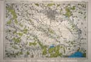 | 37. Institutul Geografic
Militar / Deutsche Wehrmacht, (topografische kaart van Roemenië
Schaal 1 : 100.000) Bucureşti (Boekarest) Nr. 4040 'Sonderausgabe!
Nur für den Dienstgebrauch!' Bucureş ti 1933 / Boekarest ca. 1942. 61 x 84 cm. (W.2p.21) |
|
| 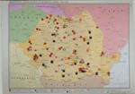 | 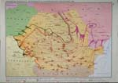 | 38. Rezistenta Antifascista în România
între 1940 - 1944 & Insurectia Nationala Antifascista si
antiimperialista din august 1944. Uit: Atlas pentru istoria României. Bucureşti 1983. 48 x 32,5 cm. (O.46) |
| 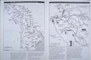 | 39. Martin Gilbert. The
Jews of Bessarabia on the Eve of War & Massacres, Deportations
and Deathmarches from Bessarabia from July 1941. Uit: Atlas of the
Holocaust. New York 1993. 26 x 38 cm. (O.77) |
|
| Deze kaarten tonen
wederwaardigheden van Roemenië tijdens de Tweede Wereldoorlog. De
militair-topografische kaart van de omgeving van Boekarest is een
overdruk van een Roemeense kaart van 1933 door het Duitse leger. De
twee kaarten uit de Roemeense atlas laten zien hoe eenzijdig in de
communistische tijd die geschiedenis verbeeld wordt. Vreemd is dat
de grenzen van Roemenië die van 1945 zijn, terwijl Tsjechoslowakije
in de toestand van vóór 1939 is aangegeven en de Sovjet Unie in de
toestand van 1940, na de deling van Polen tussen Hitler en Stalin.
Het verlies (1940) van Noord-Transsylvanië, Bessarabië,
Noord-Boekovina en Zuid-Dobroedsja wordt dus genegeerd. Er is in de
atlas ook geen kaart te vinden van de terugverovering van Bessarabië
en de bezetting van Transnistrië (West-Oekraïne) door het
Roemeense leger (1941), noch van de opmars van Roemeense soldaten
tot aan Stalingrad. Wel van de verzetsactiviteiten tegen de Duitsers
en Hongaren tijdens de oorlog (bovenste kaart) en de opmars van
samenwerkende Sovjet- en Roemeense troepen bij de bevrijding van het
land in 1944 (onderste kaart). Op de laatste twee kaarten is iets
van de andere kant van de medaille te zien: de wijze waarop in het
Bessarabisch deel van het Roemenië van Antonescu met de joden is
omgegaan. Links zijn de aantallen joden aangegeven per stad of dorp:
het zijn er bijna 167.000. Volgens de rechter kaart zijn er daarvan
148.000 in dodenmarsen, concentratiekampen en willekeurige executies
om het leven gekomen. Uitvoerders van die slachtingen zijn niet
alleen nazi's. Maar alleen al omdat maarschalk Antonescu na de
oorlog door de communisten is geëxecuteerd geldt hij voor een deel
van de Roemeense bevolking na de val van Ceauşescu als een
held. (meer)
|
||
| vorige pagina | volgende pagina |